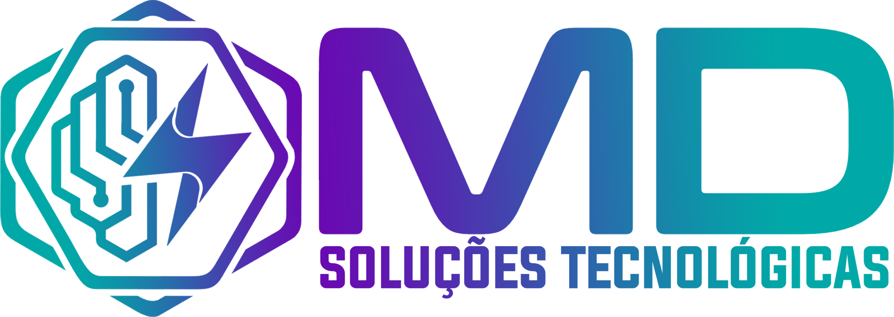
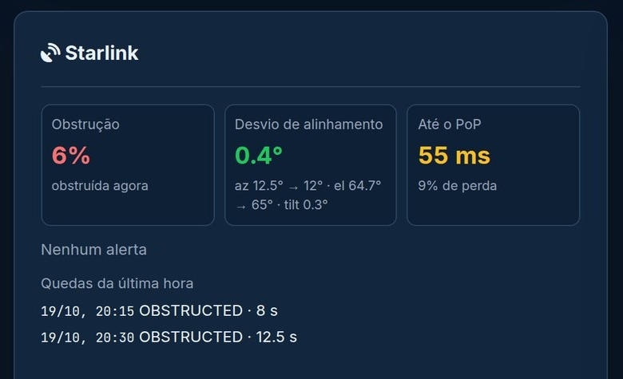

Novo serviço MD
Monitoramento
de rede
24/7
Sua internet monitorada, diagnosticada
e cuidada por quem entende — dia e noite.
MonitoramentoDiagnósticoAlertas
 Tecnologia NexoPulse · desenvolvida pela MD
Tecnologia NexoPulse · desenvolvida pela MDSua internet monitorada, diagnosticada
e cuidada por quem entende — dia e noite.
Tecnologia NexoPulse · desenvolvida pela MDE agora, de quem é a culpa?

A MD descobre onde está o problema — antes de você precisar perguntar.

Analisamos a conexão camada por camada. Você recebe a causa real — sem alarme falso.

Plataforma NexoPulse · dados de demonstração
Direto no grupo da sua empresa: o que aconteceu, desde quando e o que fazer.
Ferramenta própria da MD para um
monitoramento de mais qualidade.
O sensor que mede sua conexão a cada 5 segundos.
Onde nossa equipe acompanha tudo 24/7 — e você também.
Conclui a causa provável antes de qualquer alerta.
Em 3 passos — e sem trabalho nenhum
para você.

Entendemos seus locais, links e o que é crítico para o seu negócio.
Nossa equipe implanta e configura tudo, sem parar sua operação.
Alertas no grupo da sua empresa e acesso à plataforma para acompanhar em tempo real.
Chame a MD no direct e agende
uma avaliação da sua rede.
Tecnologia NexoPulse · desenvolvida pela MD